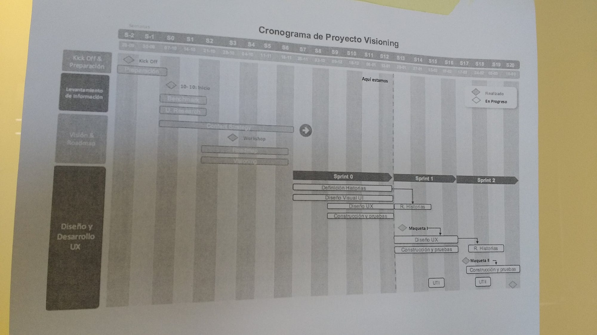
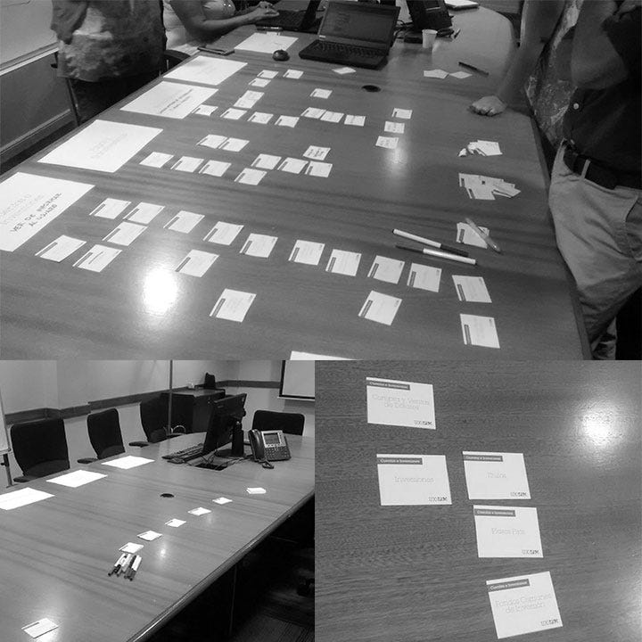
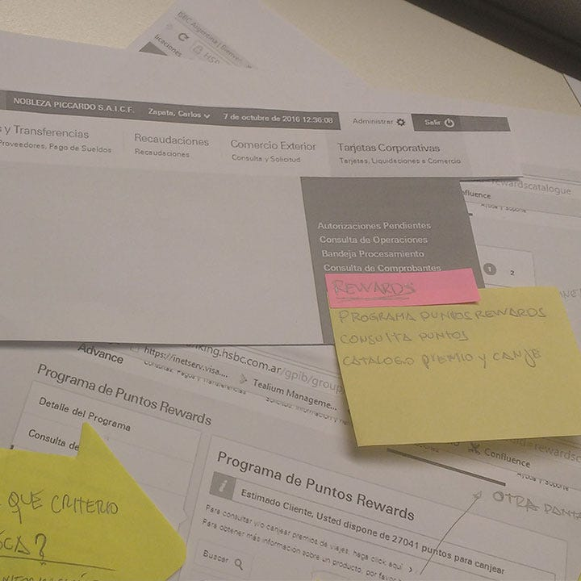
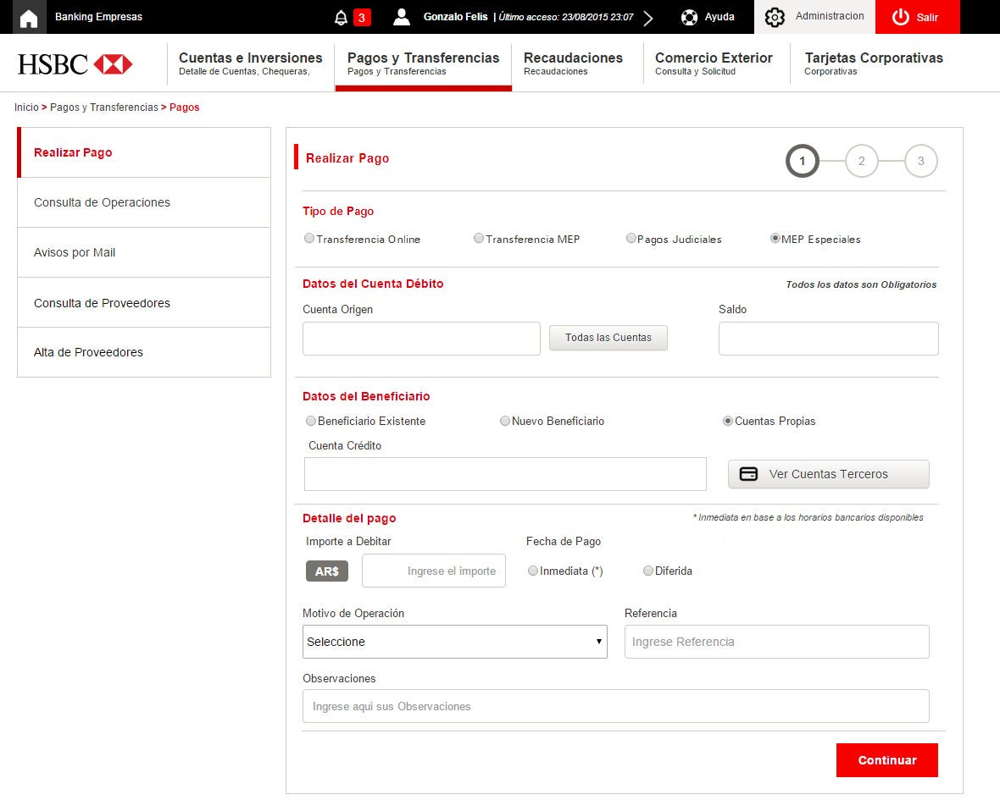
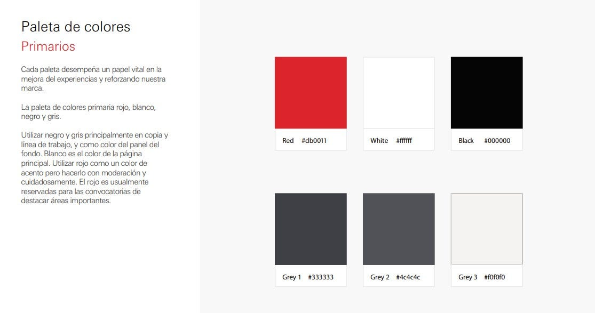
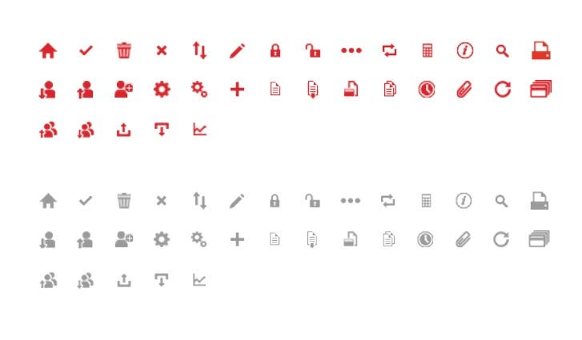
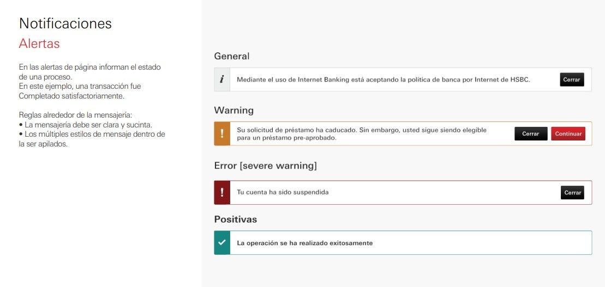

CASO DE ESTUDIO UX/UI
IBM · HSBC — Banca Empresas, Argentina
Rediseño de la Banca Empresas de HSBC Argentina en conjunto con IBM: investigación con usuarios, arquitectura de información y sistema de diseño para digitalizar operaciones bancarias corporativas.
Rol
UX Designer
Duración
2 años
Año
2015
CONTEXTO
Reinventarse es difícil, más cuando se trata de una organización como los bancos. A través de la utilización de distintos métodos, como el diseño centrado en el usuario y metodologías ágiles, empezamos a mejorar la forma en que se trabajaban los proyectos —incrementando la capacidad de desarrollo para responder de manera ágil a los cambios tecnológicos, garantizando calidad y minimizando el impacto al usuario.
El proyecto arrancó a fines de 2015: rediseñamos la Banca Empresas de HSBC Argentina, donde las transacciones que se realizan son distintas a las de banca de individuos, por ejemplo:
Una de mis tareas diarias era la coordinación de la implementación de servicios digitales, así como la capacidad de asignar y reasignar tareas dentro del equipo de proyecto, asegurando la colaboración y el espíritu de equipo, la motivación y el desarrollo de habilidades de alto desempeño de mis colaboradores.
DISCOVERY
Mediante el uso de metodologías ágiles se planteó un Discovery (Etapa 0) de 4 meses desde el inicio del proyecto, en el que se evaluaron las distintas funcionalidades, flujos y casos de uso junto con el equipo de IBM y HSBC —formado por los dueños de producto de los distintos canales y la parte técnica del banco.
Todo este trabajo nos llevó a poder realizar prototipos para testear con los usuarios, ver el desarrollo de las historias de usuario y entender la parte técnica de los procesos burocráticos del banco.

Cronograma del proyecto Discovery.
ARQUITECTURA DE INFORMACIÓN
Los usuarios a los que apuntamos son empresas, cuyos movimientos diarios son distintos entre sí. Nuestros usuarios no solo eran quienes estaban a cargo de las cuentas de la empresa, sino también los stakeholders dentro del banco, dueños de producto.
Los resultados obtenidos nos dieron conocimiento del negocio, punto clave para entender los nuevos flujos que deberíamos construir para sortear las distintas dificultades. Mediante esta técnica se generó la arquitectura de información tanto de la banca empresa como de la intranet para operar la plataforma.
"Descubrimos que ciertos sectores lo único que tenían era un acceso directo en el escritorio, por lo cual nunca veían la estructura general, solo lo que les interesaba a ellos; lo demás era un limbo."
Así fue como empezamos a entender y a construir una nueva estructura de información.

Card sorting con stakeholders y usuarios del banco.
IDEACIÓN
Una vez obtenidos los resultados del Card Sorting, la estructura de información encontró un nivel de escalabilidad: con simples post-its podíamos armar una nueva estructura como consecuencia del proceso anterior.
"Los prototipos me ayudaron a proponer soluciones variables y constantes, para generar conciencia de que las decisiones se tomaban buscando consistencia con toda la estructura del sitio; de esta manera la escalabilidad era aún mayor."
Al entender ese proceso, pudo fluir entre el equipo de desarrolladores el entendimiento del porqué de las soluciones propuestas.

PROTOTIPADO
Con todo el nivel de información que recabamos, se realizaron los wireframes del proyecto: los distintos flujos y la arquitectura de información.
"Los wireframes se realizaron en Axure; desde el banco ya querían subirlo a producción por la rápida efectividad de los mismos, pero hubo que aclarar que era solo un prototipo no funcional."
Con las pruebas con usuarios pudimos entender los caminos planteados en los casos de uso, para visualizar en conjunto los objetivos del producto.

SISTEMA DE DISEÑO
Asegurar que los clientes experimenten una apariencia y una sensación consistentes cuando y dondequiera que interactúan con nosotros digitalmente. ¿El resultado? Interacciones positivas que tranquilizan a los clientes, aseguran su lealtad y apoyan la marca.
"Cada paleta desempeña un papel vital en la mejora de la experiencia y en el refuerzo de nuestra marca."
La paleta de colores primaria: rojo, blanco, negro y gris.

Negro y gris se usan principalmente en copy y líneas de trabajo, y como color de fondo de paneles. Blanco es el color de la página principal. El rojo se usa como color de acento, con moderación y cuidado, reservado para destacar áreas importantes y llamados a la acción.

Iconografía — nuestros iconos apoyan procesos a través de las plataformas en línea.

Notificaciones y alertas — mensajería clara y sucinta para cada estado del sistema.
¿QUÉ APRENDÍ DE ESTE PROYECTO?
Un resultado importante fue converger en una estructura donde una visión distinta ayuda a la organización a mejorar la experiencia en el desarrollo de sus productos.
No es una receta: es la manera en que te vas metiendo en la organización en base a resultados y concesiones con todos los interesados, sirviendo de nexo entre las distintas partes de la organización para poder hablar un mismo idioma. El proyecto tuvo una duración de 2 años, en los que se notó un cambio de visión a lo largo de ese camino recorrido.
Trabajar con stakeholders de negocio en la creación de objetivos para los nuevos productos bajo la óptica del diseño.
Traer los insights de usuarios y clientes al ciclo de desarrollo de producto y a las discusiones de negocio.
Asegurar que las soluciones propuestas sean factibles y que los estándares definidos se mantengan durante la codificación.
El desarrollo de productos y soluciones requiere presencia constante en todas las áreas involucradas, no solo en diseño.